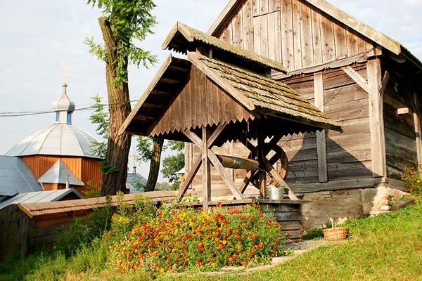
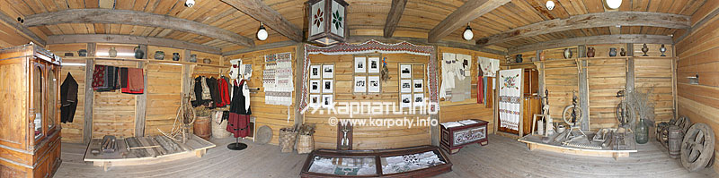
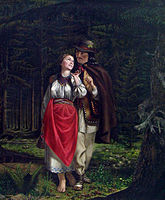

Історичні пам'ятки села Вовків

Музей-садиба Устияновичів у селі Вовків

Храм Введення Пресвятої Богородиці у Вовкові (1702р.)

Храм Марії Магдалини у селі Вовків
Галерея пам'яток
Музей-садиба Устияновичів у Вовкові



Екскурс в Історію музею
Музей був відкритий 29 вересня 1991 р. як філіал Національного музею у місті Львів. Музей розташований у колишній хаті-плебанії, службовому приміщенні для священиків місцевої церкви. Саме тут, у родині священика Миколи Устияновича, знаного письменника та поета, народився Корнило Устиянович — відомий український художник та громадський діяч. Умовно експозицію музею можна розділити на три частини: розділ, присвячений Миколі Устияновичу; розділ, де представлені матеріали про Корнила Устияновича та копії його картин ("Шевченко на засланні", "Мазепа на переправі", "Бойківська пара", "Автопортрет" та ін.), та матеріали, які розповідають про діяльність Франтішека Ржегоржа — чеського етнографа, якого називають "апостолом слов’янського єднання". Територія музею — 1 гектар старого саду з фруктовими деревами, травами та квітами — створює тут особливо затишну атмосферу. Криниця на музейному подвір’ї є найглибшою в цілому селі. У дерев’яному шпихлірі — колишньому приміщенні для збереження зерна — сьогодні розміщена етнографічна експозиція: народний одяг, ужиткові знаряддя праці, прялки, веретена, лампи, посуд, скрині та ін. Світлиця — частина колишньої стодоли — є приміщенням для виставок, творчих зустрічей, конференцій. Особливу атмосферу музею творить кухня в хаті-плебанії з давньою піччю — місце, де можна випити чаю чи молока, спекти яблуко з місцевого саду. Упродовж багатьох років на базі музею регулярно організовуються міжнародні волонтерські табори та різноманітні пленери, навчальні програми, наукові заходи, творчі зустрічі, мистецькі проекти. "Треба добре знати свій край,
бо рідна земля – все одно,
що велика сім’я,
а земляки – все одно, що родичі.»
Софія Русова
Видатні постаті
 Микола Устиянович
Микола Устиянович
(07.12.1811—03.11.1885) — письменник-романтик, громад. діяч, священик. Батько К.Устияновича. Народився в м. Миколаїв (нині місто Львів. обл.). Закінчив Львів. ун-т (теологію) і Греко-католицьку духовну семінарію у Львові (1838), після чого працював священиком у селах Вовків (нині село Пустомитівського р-ну), Славсько (нині смт Славське Сколівського р-ну; обидва Львів. обл.) та м. Сучава. У студентські роки близький до "Руської трійці", згодом — спадкоємець і пропагандист її ідей. 1848 — ініціатор скликання 1-го з’їзду укр. інтелігенції — діячів науки, освіти і к-ри у Львові (див. Собор руських учених 1848), на якому закликав розвивати традиції М.Шашкевича і Т.Шевченка. 1849—50 — редактор урядової україномовної газ. "Галичо-руський вісник". 1861—66 — депутат Галицького крайового сейму. У. — автор бл. 80-ти поезій і 6-ти повістей, а також віршів: "Руслану-Маркіяну Шашкевичу в день імені його", "Згадка за Маркіяна Шашкевича", "До Перемишлян", "До "Зорі Галицької”", "Руська думка", "Народний дім", "Наддністрянка" (відома членам Кирило-Мефодіївського товариства). Істор. сюжети відображено в багатьох патріотичних віршах: "Похід Русі на Царгород (907)", "Хрещення великої княгині Ольги", "Могила Святослава", "Смерть князя Романа під Завихостом в літо 1205", "Княгиня Романова", "Святоубийство князів Ігоровичів у Галичі", "Ужас на Русі при зближенні монголів в л. 1224", "Віче в Києві", "Здвиг", "Стичка на Половецькім полі", "Битва над Калкою", "Київ", поема "Путь на полонину", в якій створено алегоричний образ істор. поступу укр. народу до кращого майбутнього, та ін. Фольклорно-етногр. матеріал поклав в основу повістей "Месть верховинця", "Страсний четвер". Значну популярність здобула здійснена ним переробка п’єси Ю.Коженьовського "Карпатські горці" під назвою "Верховинці", пісні з якої ("Верховинець", "Гей, браття опришки") стали народними. У газетних публікаціях пристрасно обстоював нар. мову як основу літературної. У статті "Молода Русь" ("Зоря Галицька", 1850) дав короткий нарис нац. відродження українців Галичини та визначив провідну роль у ньому "Руської трійці" і М.Шашкевича. Залишив цінні спогади "Відродження Галицької Русі і Маркіян Шашкевич" ("Родимый листок", 1880). Вважається автором віршованої автобіографії "Вспомини" (1884). П. у м. Сучава.
 Корнило Устиянович
Корнило Устиянович
(22.09.1839—22.07.1903) — живописець, письменник, громад. діяч. Син М.Устияновича. Народився в с. Вовків (нині село Пустомитівського р-ну Львів. обл.). Навч. у віденській Академії образотворчих мист-в (1858—63). Один з основоположників нац. школи реалістичного живопису в Галичині. Створив монументальні розписи, ікони, композиції на істор. та бібл. сюжети ("Василь Теребовельський" (1866), "Христос перед Пілатом" (1880), "Мойсей" (1887), "Козацька битва" (1890), "Літописець Нестор" (1901), "Т.Шевченко на засланні"; 1880-ті рр.), жанрові картини із сел. життя ("Бойківська пара", "Гуцулка біля джерела", "Гуцул"; усі 1891), портрети (композиторів П.Бажанського і А.Вахнянина, громадських та культурних діячів С.Качали, Ю.Лаврівського, О.Борковського, Т.Окуневського), пейзажі ("Скит Манявський", "Захід сонця", 1902). Автор віршів, які друкувались у львів. часописах "Галичанин" та "Основа", істор. поем "Іскоростень", "Вадим", "Святослав Хоробрий", драм "Олег Святославович Овруцький", "Ярополк Перший Святославович, великий князь київський" (усі в 1870-ті рр.). Писав істор. та етногр. розвідки. Упродовж 1882—83 редагував та ілюстрував сатиричний час. "Зеркало". П. у с. Довге (нині село Дрогобицького р-ну Львів. обл.). У с. Вовків 1991 відкритий художньо-меморіальний музей Устияновичів.
Новини
Усі ми знаємо, що у Західній України багато красивих сіл, які розташовані у самих Карпатах. Вовків, без перебільшення, – одне з наймальовничіших сіл Львівщини. І хоча від нього до Карпат ще дуже далеко, саме тут ми побачили якесь незвичайне буяння природи та неповторний ландшафт. За те, що тут багато мальовничих пагорбів, місцину називають Львівськими Карпатами. І саме Вовків здався нам тим місцем, де слід відпочити від міської метушні. Село розташоване зовсім недалеко від Львова – якщо навпростець, то десь кілометрів з 10. Але віддаленість від основних доріг зіграла на користь красі Вовкова: тут тихо, зелено, і все наповнено пташиним співом. Хоча місцевих мешканців така ідилія зовсім не тішить – автобус сюди їздить рідко, дороги тут роздовбані, та й з роботою зовсім важко. І ми відчули цю віддаленість від цивілізації, коли довелося частину шляху до Вовкова йти пішки, адже транспорту не дочекалися. Але про то згодом. Що стосується назви села, деякі дослідники вважають, що вовки тут ні до чого, а походить назва від слова «волочити». Колись тут були озера, човни між якими волочили по суші. У письмових джерелах Вовків вперше згадується у 1398 році. Колись він був містом. Але наприкінці XVIII ст. була прокладена Стрийська дорога, яка пройшла повз Вовків; місто стало занепадати, перетворилося на село. Навіть не віриться, що тут було справжнє місто. Але для невіруючих у Вовкові навіть збереглися контури древньої трикутної ринкової площі, які були властиві, звичайно ж, середньовічним містам, але ж ніяк не селам. На жаль, ми не встигли побачити давній центр колишнього міста, проте побачили цінні споруди більш нового часу. Коли їдеш по Вовкову, то над дорогою, на пагорбі, видно костел Марії Магдалини. Одна з найцікавіших культових споруд Галичини ХХ століття була побудована у 1924 р. Створив костел відомий польський архітектор Броніслав Віктор, який є автором багатьох споруд у Галичині, Зокрема, ратуші у Жовкві. Костел, збудований у вишуканому стилі ар-деко, виконаний з надзвичайним смаком. Він має різний вигляд з якоюсь характерною деталлю з кожного з чотирьох боків. Найбільш цікавою особливістю, на наш погляд, є кругла вежа, прибудована ліворуч від входу, схожа на вежі середньовічних замків. За радянських часів у костелі був склад мінеральних добрив. Зараз храм перебуває у жалюгідному стані. Цікавим є факт, що у ньому у 1993 р. знімалися сцени з першого українського детективу «Злочин з багатьма невідомими» за мотивами твору Івана Франка. Доля самого Франка пов’язана з Вовковим. Він любив тут відпочивати, тут провела ціле літо його дружина під час вагітності. Ще у селі є красива дерев’яна Введенська церква (1706), яка симпатично розташована на невеличкому узвишші. Тут свого часу правив відомий громадський діяч та літератор отець Микола Устиянович. У хаті-плебанії, що збереглася біля церкви, народився його син Корнило Устиянович – відомий український художник. Тепер тут музей. Розташований він за церквою, тут же на подвір’ї встановлений пам’ятник Корнилові Устияновичу. Дуже затишне місце. Також у селі у 1877-1890 рр. жив Ржегорж Франтішек – чеський етнограф, дослідник народного побуту і фольклору Галичини.Contact Us